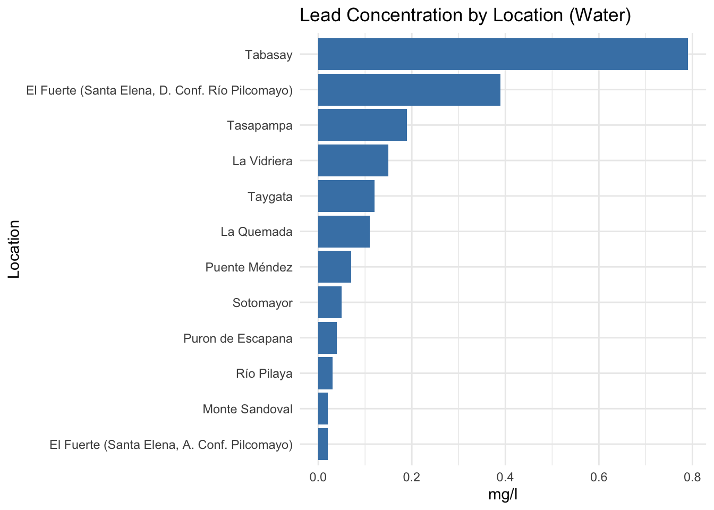
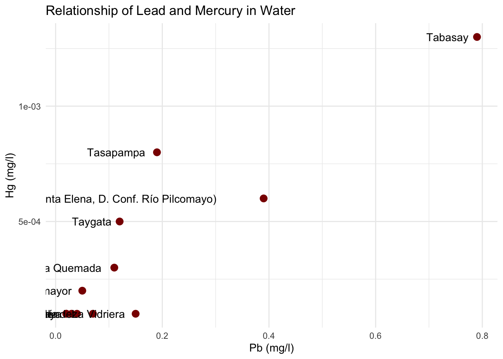
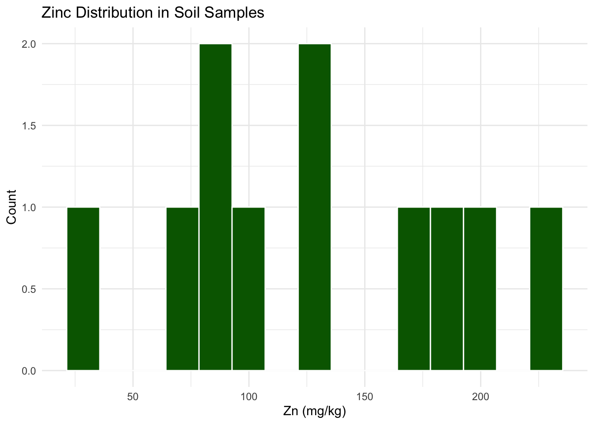
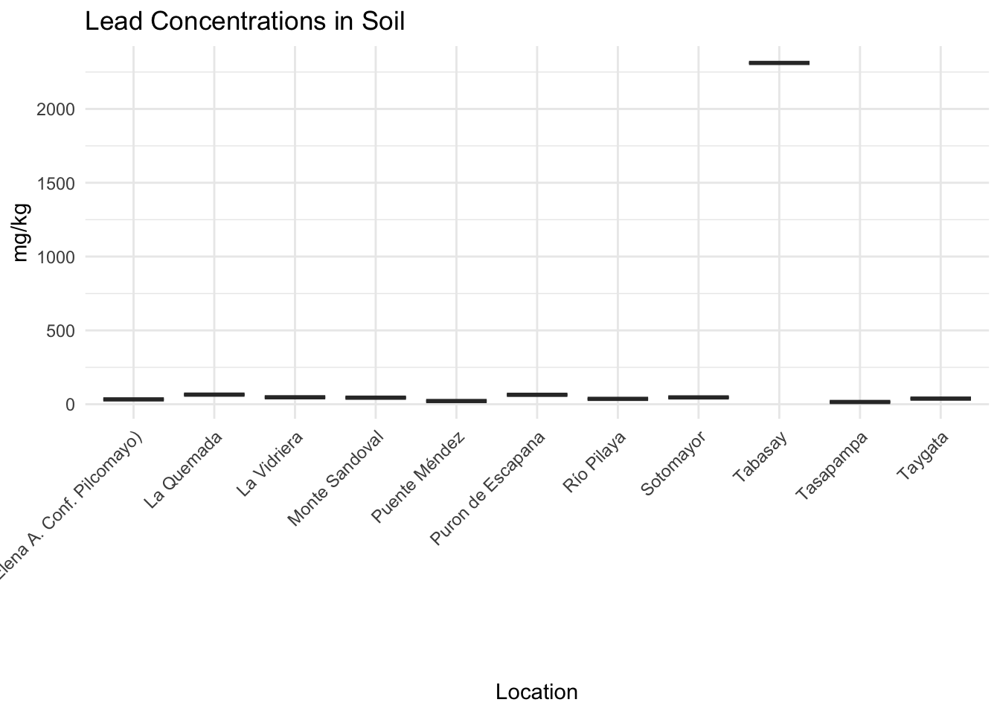
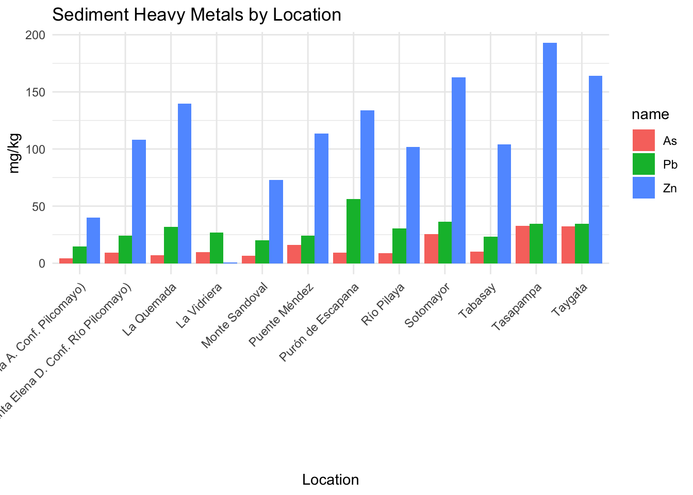
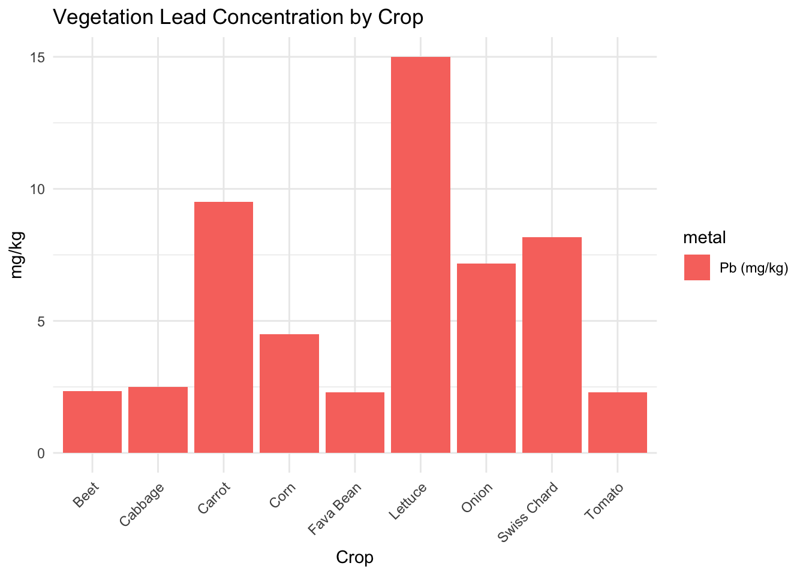
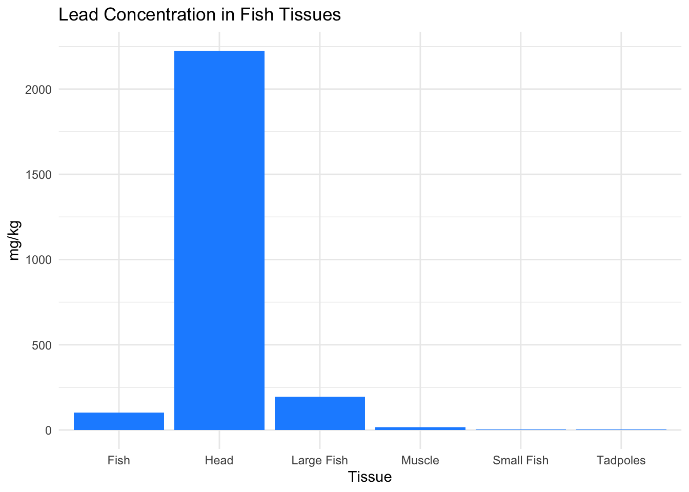
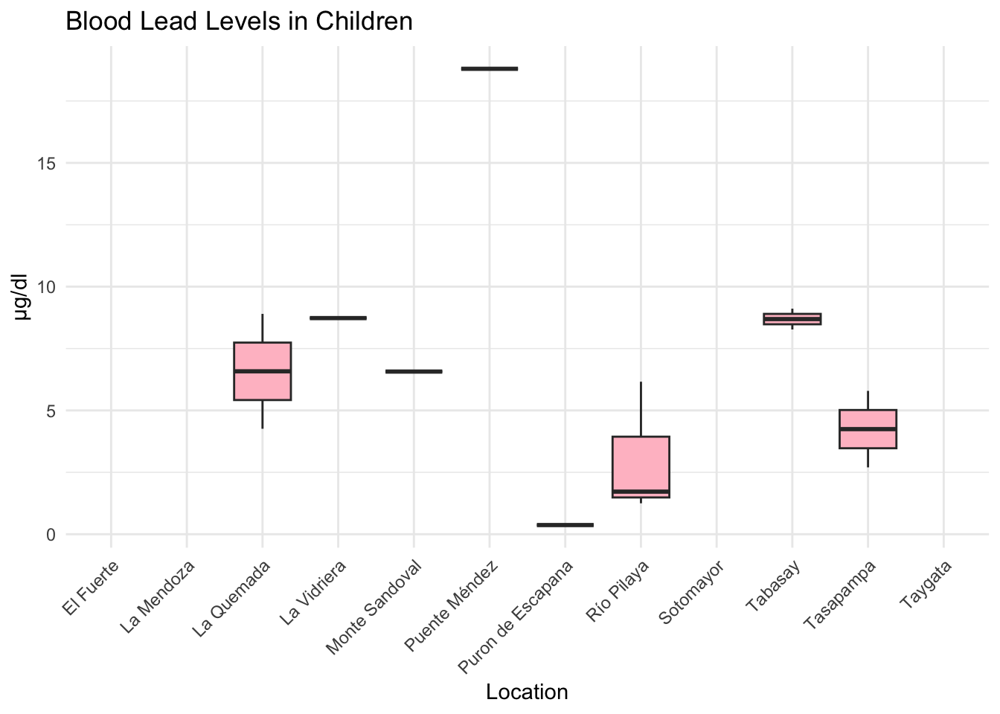
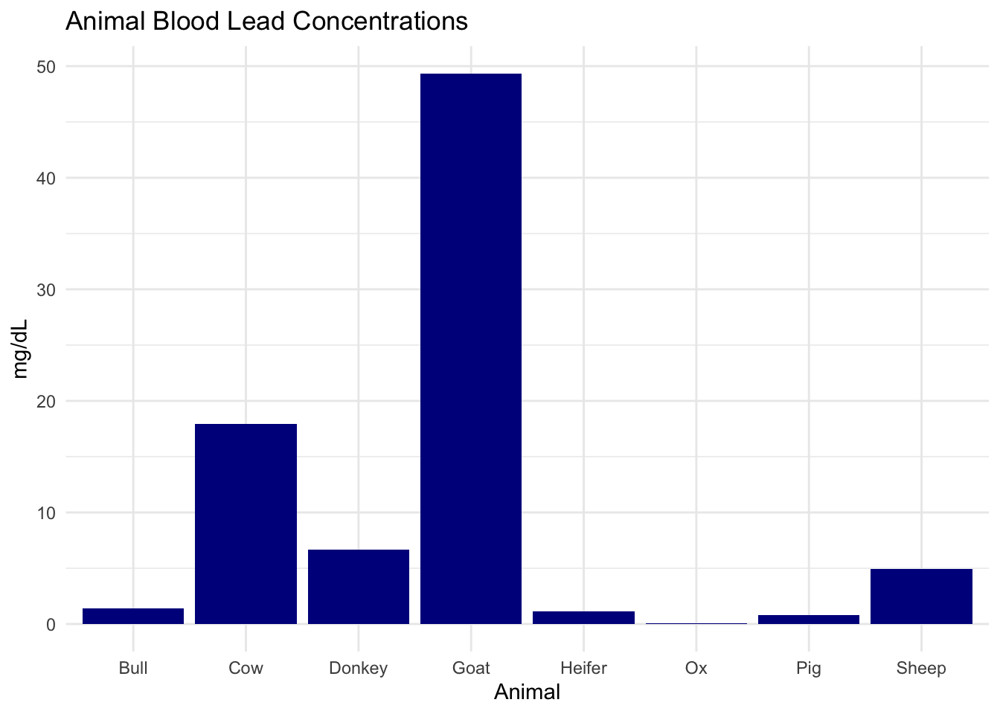

library(tidyverse)
library(readr)
library(sf)
library(ggthemes)
library(patchwork)Bolivia Pilcomayo Heavy Metals Study
1 Introduction
The following analysis explores heavy metal concentrations measured in 2006 across water, soil, sediment, vegetation, fish, humans, and animals in the Pilcomayo River basin of Chuquisaca, Bolivia. Data is derived from Fundación I.T.A. and serves as a baseline for environmental and health risk evaluation in your internship research.
2 Objectives
- Summarize heavy metal concentrations across environmental media
- Visualize spatial and temporal variation
- Identify sites exceeding threshold levels
- Provide initial evidence for policy recommendations
3 Methods
Data were read from cleaned CSV files. Exploratory data analysis included descriptive statistics, barplots, and potential outlier detection.
4 Data Summaries
4.1 Water
water <- read_csv("data/ITA_water_2006.csv")summary(water) Municipality Point No. Location Time
Length:12 Min. : 1.00 Length:12 Length:12
Class :character 1st Qu.: 3.75 Class :character Class1:hms
Mode :character Median : 6.50 Mode :character Class2:difftime
Mean : 6.50 Mode :numeric
3rd Qu.: 9.25
Max. :12.00
Sampling Date pH Pb (mg/l) Hg (mg/l)
Length:12 Min. :7.700 Min. :0.0200 Min. :0.0001000
Class :character 1st Qu.:7.950 1st Qu.:0.0375 1st Qu.:0.0001000
Mode :character Median :8.250 Median :0.0900 Median :0.0001500
Mean :8.183 Mean :0.1650 Mean :0.0003583
3rd Qu.:8.400 3rd Qu.:0.1600 3rd Qu.:0.0005250
Max. :8.800 Max. :0.7900 Max. :0.0013000
As (mg/l) Cd (mg/l) Zn (mg/l) X (UTM)
Min. :0.00200 Min. :0.000300 Min. :0.010 Min. :255792
1st Qu.:0.00625 1st Qu.:0.002000 1st Qu.:0.035 1st Qu.:265924
Median :0.03600 Median :0.003000 Median :0.310 Median :280566
Mean :0.03975 Mean :0.004442 Mean :0.605 Mean :300712
3rd Qu.:0.06125 3rd Qu.:0.004500 3rd Qu.:0.695 3rd Qu.:321102
Max. :0.10100 Max. :0.017000 Max. :2.930 Max. :394393
Y (UTM) Elevation (m)
Min. :7621425 Min. : 814
1st Qu.:7659640 1st Qu.:1808
Median :7713444 Median :2304
Mean :7741905 Mean :1986
3rd Qu.:7859176 3rd Qu.:2368
Max. :7866313 Max. :2431 4.1.1 Lead in Water
ggplot(water, aes(x = reorder(Location, `Pb (mg/l)`), y = `Pb (mg/l)`)) +
geom_col(fill = "steelblue") +
coord_flip() +
labs(title = "Lead Concentration by Location (Water)", x = "Location", y = "mg/l") +
theme_minimal()
4.1.2 Mercury vs Lead
ggplot(water, aes(x = `Pb (mg/l)`, y = `Hg (mg/l)`, label = Location)) +
geom_point(size=3, color="darkred") +
geom_text(hjust=1.2, vjust=0.5) +
labs(title="Relationship of Lead and Mercury in Water", x="Pb (mg/l)", y="Hg (mg/l)") +
theme_minimal()
4.2 Soil
soil <- read_csv("data/ITA_soil_2006.csv")4.2.1 Zinc Distribution in Soil
ggplot(soil, aes(x = `Zn (mg/kg)`)) +
geom_histogram(bins=15, fill="darkgreen", color="white") +
labs(title = "Zinc Distribution in Soil Samples", x = "Zn (mg/kg)", y = "Count") +
theme_minimal()
4.2.2 Lead in Soil by Location
ggplot(soil, aes(x = Location, y = `Pb (mg/kg)`)) +
geom_boxplot(fill="brown") +
labs(title = "Lead Concentrations in Soil", x = "Location", y = "mg/kg") +
theme_minimal() +
theme(axis.text.x = element_text(angle=45, hjust=1))
4.3 Sediment
sediment <- read_csv("data/ITA_sed_2006.csv")4.3.1 Sediment Metals Summary
sediment %>%
select(Location, Zn = `Zn (mg/kg)`, Pb = `Pb (mg/kg)`, As = `As (mg/kg)`) %>%
pivot_longer(-Location) %>%
ggplot(aes(x = Location, y = value, fill = name)) +
geom_bar(stat="identity", position="dodge") +
labs(title="Sediment Heavy Metals by Location", y="mg/kg") +
theme_minimal() +
theme(axis.text.x = element_text(angle=45, hjust=1))
4.4 Vegetation
veg <- read_csv("data/ITA_veg_2006.csv")4.4.1 Vegetation Metals by Crop Type
veg %>%
pivot_longer(cols = starts_with("Pb"), names_to="metal", values_to="value") %>%
ggplot(aes(x=Crop, y=value, fill=metal)) +
geom_col(position="dodge") +
labs(title="Vegetation Lead Concentration by Crop", y="mg/kg") +
theme_minimal() +
theme(axis.text.x=element_text(angle=45, hjust=1))
4.5 Fish
fish <- read_csv("data/ITA_fish_2006.csv")4.5.1 Lead in Fish Tissues
ggplot(fish, aes(x = `Sample Type`, y = `Pb (mg/kg)`)) +
geom_col(fill="dodgerblue") +
labs(title="Lead Concentration in Fish Tissues", x="Tissue", y="mg/kg") +
theme_minimal()
4.6 Human
human <- read_csv("data/ITA_human_2006.csv")4.6.1 Blood Lead Levels in Children
ggplot(human, aes(x=Location, y=`Pb [µg/dl] Children`)) +
geom_boxplot(fill="pink") +
labs(title="Blood Lead Levels in Children", y="µg/dl") +
theme_minimal() +
theme(axis.text.x = element_text(angle = 45, hjust = 1))
4.7 Animals
animal <- read_csv("data/ITA_animal_2006.csv")4.7.1 Animal Blood Lead Levels
ggplot(animal, aes(x=Animal, y=`Pb (mg/dL)`)) +
geom_col(fill="darkblue") +
labs(title="Animal Blood Lead Concentrations", y="mg/dL") +
theme_minimal()